Ermənistanla
Azərbaycan arasında ərazi münaqişəsinin ən dəhşətli nəticələrindən biri də azərbaycanlı
əhalinin Ermənistandan deportasiyası oldu.
1918-1920-ci illər
1918-1920-ci
illərdə azərbaycanlı əhalinin soyqırımının və azərbaycanlıların Ermənistandan
deportasiyasının əsas səbəbi ermənilərin "Böyük Ermənistan" yaratmaq xülyası
idi.
Ərazi əldə etməyə və etnik ərazini süni şəkildə genişləndirilməyə güclü meyil, mədəni üstünlüyə və yaşayış yeri ilə bağlı xüsusi hüquqlara malik olmaq ideyası ermənilər arasında total xarakter almışdı. Erməni şovinistləri hesab edirdilər ki, "Böyük Ermənistan" əhalinin əksəriyyətinin iradəsinə arxalanmaqla yox, silah gücü ilə, zorla qəbul etdirilə bilər. Xülyası qurulan gələcək dövlət müsəlmanlardan təmizlənmək yolu ilə xarabalıqlar və günahsız "yadellilər"in meyitləri üzərində qan və dəmirlə qurulmalıdır.
Əvvəlcə Osmanlı Türkiyəsinin ərazisində, 1918-1920-ci illərdə isə Cənubi Qafqazda "Böyük Ermənistan" üçün ərazinin formalaşdırılması ilə bağlı bu məkrli planın gerçəkləşdirilməsi lap əvvəldən kəskin qarşıdurmanın və müsəlman əhalinin soyqırımının qaçılmazlığı ilə bağlı idi.
1918-ci ilin mayında Cənubi Qafqazda ilk dəfə yaradılmış erməni dövlətinin tərkibinə daxil olan İrəvan quberniyasının qəzalarında baş verən dəhşətli hadisələr Şimali Azərbaycanın şərqində, Bakı quberniyasında 1918-ci ilin yazında Bakı Sovetinin bolşevik-daşnak birləşmələrinin müsəlman əhaliyə qarşı soyqırımı törətdiyi hadisələrlə, demək olar ki, eyni vaxtda başlamışdı.
Ərazi əldə etməyə və etnik ərazini süni şəkildə genişləndirilməyə güclü meyil, mədəni üstünlüyə və yaşayış yeri ilə bağlı xüsusi hüquqlara malik olmaq ideyası ermənilər arasında total xarakter almışdı. Erməni şovinistləri hesab edirdilər ki, "Böyük Ermənistan" əhalinin əksəriyyətinin iradəsinə arxalanmaqla yox, silah gücü ilə, zorla qəbul etdirilə bilər. Xülyası qurulan gələcək dövlət müsəlmanlardan təmizlənmək yolu ilə xarabalıqlar və günahsız "yadellilər"in meyitləri üzərində qan və dəmirlə qurulmalıdır.
Əvvəlcə Osmanlı Türkiyəsinin ərazisində, 1918-1920-ci illərdə isə Cənubi Qafqazda "Böyük Ermənistan" üçün ərazinin formalaşdırılması ilə bağlı bu məkrli planın gerçəkləşdirilməsi lap əvvəldən kəskin qarşıdurmanın və müsəlman əhalinin soyqırımının qaçılmazlığı ilə bağlı idi.
1918-ci ilin mayında Cənubi Qafqazda ilk dəfə yaradılmış erməni dövlətinin tərkibinə daxil olan İrəvan quberniyasının qəzalarında baş verən dəhşətli hadisələr Şimali Azərbaycanın şərqində, Bakı quberniyasında 1918-ci ilin yazında Bakı Sovetinin bolşevik-daşnak birləşmələrinin müsəlman əhaliyə qarşı soyqırımı törətdiyi hadisələrlə, demək olar ki, eyni vaxtda başlamışdı.
Birinci Dünya
müharibəsi dövründə Şərqi Anadoluda türk-müsəlman əhalinin qırılması sahəsində zəngin
təcrübəsi olan, təpədən dırnağacan silahlanmış erməni dəstələri Qafqaz cəbhəsini tərk
edən rus ordusu ilə birləşərək 1918-ci ilin əvvəllərində İrəvan quberniyası ərazilərinin
müsəlman əhalidən təmizlənməsi istiqamətində bir sıra silahlı aksiyalar həyata
keçirmişdilər. Müsəlman əhaliyə qarşı zorakılığın miqyasına dair tam təsəvvürə malik
olmaq üçün "1918-ci ilin mart ayına qədər İrəvan quberniyasının qarət olunmuş və tərk
edilmiş müsəlman kəndlərinin siyahısı" ilə tanış olmaq kifayətdir.
Bu siyahıya İrəvan quberniyasının İrəvan, Sürməli, Eçmiədzin və Novo-Bəyazid qəzalarında erməni silahlı dəstələri tərəfindən qarət olunmuş və nəticədə müsəlman əhali tərəfindən tərk edilmiş 199 kəndin adı daxil idi [1] . Bununla yanaşı, dinc sakinlərin fiziki məhvi, qanlı qırğınlar, vəhşiliklər, hədə-qorxu, panika yaradan şayiələr - bütün bunlardan ermənilər kökü buradan olan insanları ulu babalarının əsrlər boyu yaşadığı torpaqlardan çıxmağa məcbur etmək üçün istifadə edirdilər. Beləliklə, ermənilərin kompakt yaşadıqları məskənlər süni şəkildə yaradılmışdı və Türkiyədən erməni qaçqınların axını hesabına durmadan genişlənir və böyüyürdü.
1918-ci il may ayının sonlarında İrəvan quberniyası ərazisində Cənubi Qafqazda əvvəllər sahəsi 10 min km-dən çox olmayan Ararat Respublikası yaradıldıqdan sonra isə soyqırımı siyasəti artıq dövlət səviyyəsində həyata keçirilməyə başladı.
Bütün bunlar 4 iyun 1918-ci il tarixli Batum müqaviləsinin 6-cı bəndinə əsasən Ermənistan hökumətinin ölkə ərazisində yaşayan müsəlmanların təhlükəsizliyini və azad inkişafını təmin edəcəyinə, onların ana dilində təhsil almalarına və dini ayinlərini həyata keçirmələrinə şərait yaradacağına dair öhdəlik götürməsinə məhəl qoyulmayaraq həyata keçirilirdi.
Azərbaycan Milli Şurasının İrəvan [2] şəhərinin paytaxt kimi Ermənistana güzəşt edilməsi barədə 29 may 1918-ci il tarixli Qərarı ("Qafqaz təqvimi"nin 1 yanvar 1916-cı il tarixinə olan məlumatına əsasən, bu şəhərdə 12605 nəfər azərbaycanlı yaşayırdı) şəhərin müsəlman əhalisinin taleyinə faciəvi təsir göstərdi [3] (7). "Azərbaycan" qəzetinin 29 iyun 1919-cu il tarixli buraxılışında İrəvanda müsəlman əhaliyə zülm edilməsinin şahidlərindən birinin xatirələri dərc olunmuşdu: "İrəvandakı müsəlmanlar o qədər müdafiəsiz və köməksiz idilər ki, nəinki gecə, hətta günorta vaxtı, hətta müsəlman məhəlləsində belə onların salamat paltarlarını əyinlərindən çıxarırdılar. Müsəlmanların pulları və qiymətli əşyaları da eynilə əllərindən alınırdı... Müsəlmanların fərdi evləri də talandan və zorakılıqdan yan keçə bilmirdi, təpədən dırnağacan silahlanmış ermənilər burada "artıq" olan hər şeyi talayıb aparırdılar. Bütün bunlar Ermənistanın paytaxtı İrəvanda bu gün də baş verir. Müsəlmanların İrəvanda yaşadıqları əzab-əziyyəti, məruz qaldıqları işgəncəni təsvir etmək mümkün deyil. Çoxları dözməyərək dəli olub, digərləri isə vaxtından əvvəl qocalıblar... Şəhərdə müsəlmanların vəziyyəti belədir" [4] .
Bu siyahıya İrəvan quberniyasının İrəvan, Sürməli, Eçmiədzin və Novo-Bəyazid qəzalarında erməni silahlı dəstələri tərəfindən qarət olunmuş və nəticədə müsəlman əhali tərəfindən tərk edilmiş 199 kəndin adı daxil idi [1] . Bununla yanaşı, dinc sakinlərin fiziki məhvi, qanlı qırğınlar, vəhşiliklər, hədə-qorxu, panika yaradan şayiələr - bütün bunlardan ermənilər kökü buradan olan insanları ulu babalarının əsrlər boyu yaşadığı torpaqlardan çıxmağa məcbur etmək üçün istifadə edirdilər. Beləliklə, ermənilərin kompakt yaşadıqları məskənlər süni şəkildə yaradılmışdı və Türkiyədən erməni qaçqınların axını hesabına durmadan genişlənir və böyüyürdü.
1918-ci il may ayının sonlarında İrəvan quberniyası ərazisində Cənubi Qafqazda əvvəllər sahəsi 10 min km-dən çox olmayan Ararat Respublikası yaradıldıqdan sonra isə soyqırımı siyasəti artıq dövlət səviyyəsində həyata keçirilməyə başladı.
Bütün bunlar 4 iyun 1918-ci il tarixli Batum müqaviləsinin 6-cı bəndinə əsasən Ermənistan hökumətinin ölkə ərazisində yaşayan müsəlmanların təhlükəsizliyini və azad inkişafını təmin edəcəyinə, onların ana dilində təhsil almalarına və dini ayinlərini həyata keçirmələrinə şərait yaradacağına dair öhdəlik götürməsinə məhəl qoyulmayaraq həyata keçirilirdi.
Azərbaycan Milli Şurasının İrəvan [2] şəhərinin paytaxt kimi Ermənistana güzəşt edilməsi barədə 29 may 1918-ci il tarixli Qərarı ("Qafqaz təqvimi"nin 1 yanvar 1916-cı il tarixinə olan məlumatına əsasən, bu şəhərdə 12605 nəfər azərbaycanlı yaşayırdı) şəhərin müsəlman əhalisinin taleyinə faciəvi təsir göstərdi [3] (7). "Azərbaycan" qəzetinin 29 iyun 1919-cu il tarixli buraxılışında İrəvanda müsəlman əhaliyə zülm edilməsinin şahidlərindən birinin xatirələri dərc olunmuşdu: "İrəvandakı müsəlmanlar o qədər müdafiəsiz və köməksiz idilər ki, nəinki gecə, hətta günorta vaxtı, hətta müsəlman məhəlləsində belə onların salamat paltarlarını əyinlərindən çıxarırdılar. Müsəlmanların pulları və qiymətli əşyaları da eynilə əllərindən alınırdı... Müsəlmanların fərdi evləri də talandan və zorakılıqdan yan keçə bilmirdi, təpədən dırnağacan silahlanmış ermənilər burada "artıq" olan hər şeyi talayıb aparırdılar. Bütün bunlar Ermənistanın paytaxtı İrəvanda bu gün də baş verir. Müsəlmanların İrəvanda yaşadıqları əzab-əziyyəti, məruz qaldıqları işgəncəni təsvir etmək mümkün deyil. Çoxları dözməyərək dəli olub, digərləri isə vaxtından əvvəl qocalıblar... Şəhərdə müsəlmanların vəziyyəti belədir" [4] .
17-31 avqust
1919-cu il tarixlərində Ermənistan Respublikasının ərazisində Eçmiədzin, Sürməli, İrəvan
və Novo_Bəyazid qəzalarında 50-yə qədər müsəlman kəndi dağıdılmışdı [5] .
Azərbaycan Respublikasının himayədarlıq nazirinin Ermənistandakı müvəkkili T.Makinski 2 sentyabr 1919-cu il tarixində Azərbaycanın himayədarlıq nazirinə yazdığı məktubunda İrəvan quberniyasında baş verən qanlı hadisələrə qiymət verərkən quberniyanın müsəlman əhalisinin ağır iqtisadi vəziyyətini belə təsvir edirdi: "Son günlər baş verən hadisələr müsəlmanların vəziyyətini daha da acınacaqlı etmişdir. Sakinləri geri qayıdan 50-60 kənd yenidən talan edilmiş, əhalinin salamat qalmış qismi isə öz əmlakını, ərzağını və anbarlarda taxılını atıb qaçmışdır... Novo-Bəyazid, Eçmiədzin və İrəvan qəzalarından 150 minə qədər müsəlman mühacirət etmişdir.
Hazırda Ermənistan sərhədlərində nisbətən az sayda müsəlman qalıb, lakin onların sayı da hər ötən gün qarət və qarət qorxusu səbəbindən azalır. Hazırda Novo-Bəyazid rayonunda heç müsəlman qalmayıb. İrəvan qəzasında Ermənistan hakimiyyətinə tabe olan müsəlmanların sayı 25 mindən çox deyil, Eçmiədzin qəzasında da o qədərdir (25 min), Sürməli qəzasında isə (yenə də təkcə Ermənistan hakimiyyətinə tabe olan rayonlarda) 15 min nəfər müsəlman var. Bundan başqa, İrəvan qəzasında 13 min qaçqın və yerli əhali yaşayır. Aleksandropol qəzasında isə müsəlmanların sayı həmişə az olub. Beləliklə, İrəvan quberniyasının ehtiyac içində olan müsəlmanlarının uçotu zamanı bütün əhalinin sayı maksimum 80000, minimum isə 70000-ə bərabər olacaqdır.
Müsəlman əhalinin faktiki vəziyyəti dəhşətlidir: onların nə çörək, nə taxıl, nə kənd təsərrüfatı avadanlığı, nə mal-qara ehtiyatı var; çoxunun isə evi belə yoxdur. Müsəlman əhali ac, tükənmiş, hüquqsuz və yoxsul vəziyyətindən bezərək ümidsizliyə qapılmış haldadır. Ermənistan ərazisində müsəlman əhalinin böyük əksəriyyətinin əkin sahəsi yoxdur, yeni qarətlərə məruz qalmayanlar isə öz torpaqlarından istifadə etmək imkanından məhrumdurlar (icarəyə verilib və zəbt edilib)" [6] .
Azərbaycan Respublikasının himayədarlıq nazirinin Ermənistandakı müvəkkili T.Makinski 2 sentyabr 1919-cu il tarixində Azərbaycanın himayədarlıq nazirinə yazdığı məktubunda İrəvan quberniyasında baş verən qanlı hadisələrə qiymət verərkən quberniyanın müsəlman əhalisinin ağır iqtisadi vəziyyətini belə təsvir edirdi: "Son günlər baş verən hadisələr müsəlmanların vəziyyətini daha da acınacaqlı etmişdir. Sakinləri geri qayıdan 50-60 kənd yenidən talan edilmiş, əhalinin salamat qalmış qismi isə öz əmlakını, ərzağını və anbarlarda taxılını atıb qaçmışdır... Novo-Bəyazid, Eçmiədzin və İrəvan qəzalarından 150 minə qədər müsəlman mühacirət etmişdir.
Hazırda Ermənistan sərhədlərində nisbətən az sayda müsəlman qalıb, lakin onların sayı da hər ötən gün qarət və qarət qorxusu səbəbindən azalır. Hazırda Novo-Bəyazid rayonunda heç müsəlman qalmayıb. İrəvan qəzasında Ermənistan hakimiyyətinə tabe olan müsəlmanların sayı 25 mindən çox deyil, Eçmiədzin qəzasında da o qədərdir (25 min), Sürməli qəzasında isə (yenə də təkcə Ermənistan hakimiyyətinə tabe olan rayonlarda) 15 min nəfər müsəlman var. Bundan başqa, İrəvan qəzasında 13 min qaçqın və yerli əhali yaşayır. Aleksandropol qəzasında isə müsəlmanların sayı həmişə az olub. Beləliklə, İrəvan quberniyasının ehtiyac içində olan müsəlmanlarının uçotu zamanı bütün əhalinin sayı maksimum 80000, minimum isə 70000-ə bərabər olacaqdır.
Müsəlman əhalinin faktiki vəziyyəti dəhşətlidir: onların nə çörək, nə taxıl, nə kənd təsərrüfatı avadanlığı, nə mal-qara ehtiyatı var; çoxunun isə evi belə yoxdur. Müsəlman əhali ac, tükənmiş, hüquqsuz və yoxsul vəziyyətindən bezərək ümidsizliyə qapılmış haldadır. Ermənistan ərazisində müsəlman əhalinin böyük əksəriyyətinin əkin sahəsi yoxdur, yeni qarətlərə məruz qalmayanlar isə öz torpaqlarından istifadə etmək imkanından məhrumdurlar (icarəyə verilib və zəbt edilib)" [6] .
1919-cu ilin son
iki ayında Eçmiədzin qəzasının 62 kəndi, Sürməli qəzasının 34 kəndi və İrəvan qəzasının
müsəlman kəndlərinin hamısı (Zəngibasardan başqa) erməni silahlı dəstələri tərəfindən
yenidən dağıdılmışdı [7] .
Himayədarlıq Nazirliyinin məlumatlarına əsasən, bunun nəticəsi olaraq, 1919-cu ilin sonuna qədər Novo-Bəyazid, İrəvan və Eçmiədzin qəzalarının dağıdılmış müsəlman kəndlərindən olan qaçqınların sayı 200 min nəfər təşkil etmişdir [8] .
Onların əsas hissəsi Naxçıvan, Şərur, Qazax, Gəncə və Şamaxıda məskunlaşmışdı. 1920-ci ildə Azərbaycan SSR Xalq Təsərrüfatı Şurasının sədri N.İ.Solovyovun RSFSR Xalq Komissarları Sovetinin sədri V.Leninə ünvanladığı "Çevrilişdən sonrakı iki ayda (may-iyun) bizim Azərbaycanda siyasətimiz" adlı hesabat qeydində Ermənistanın müsəlman əhalisinin acınacaqlı vəziyyətindən bəhs edirdi. O bildirirdi ki, "Ermənistan Respublikası yaranarkən onun hüdudları çərçivəsində 250 müsəlman kəndi var idi, onların hamısı məhv edilib, hazırda orada bir nəfər də müsəlman yoxdur" [9] .
Himayədarlıq Nazirliyinin məlumatlarına əsasən, bunun nəticəsi olaraq, 1919-cu ilin sonuna qədər Novo-Bəyazid, İrəvan və Eçmiədzin qəzalarının dağıdılmış müsəlman kəndlərindən olan qaçqınların sayı 200 min nəfər təşkil etmişdir [8] .
Onların əsas hissəsi Naxçıvan, Şərur, Qazax, Gəncə və Şamaxıda məskunlaşmışdı. 1920-ci ildə Azərbaycan SSR Xalq Təsərrüfatı Şurasının sədri N.İ.Solovyovun RSFSR Xalq Komissarları Sovetinin sədri V.Leninə ünvanladığı "Çevrilişdən sonrakı iki ayda (may-iyun) bizim Azərbaycanda siyasətimiz" adlı hesabat qeydində Ermənistanın müsəlman əhalisinin acınacaqlı vəziyyətindən bəhs edirdi. O bildirirdi ki, "Ermənistan Respublikası yaranarkən onun hüdudları çərçivəsində 250 müsəlman kəndi var idi, onların hamısı məhv edilib, hazırda orada bir nəfər də müsəlman yoxdur" [9] .
İrəvan
quberniyasının müsəlman əhalisinə qarşı kütləvi zorakılıq faktları erməni tarixçilərinin
əsərlərində də öz əksini tapmışdır. Erməni tarixçisi A.Lalayan yazırdı: "Əksinqilabi
"Daşnaksütyun" partiyasının diktaturası dövründə (1918-1920) bütün qeyri-erməni əhali
qanundankənar sayılırdı. "Daşnaksütyun" hakimiyyətdə olduğu iki il yarım ərzində
Ermənistan ərazisində yaşayan azərbaycanlılara qarşı silahlı mübarizə aparmış,
ucdantutma bütün dinc əhalini öldürərək və qarət edərək, dinc əhalinin məskunlaşdığı
kəndləri məhv etmişdir" [10] .
Lalayan həmçinin qeyd edir ki, "Daşnaksütyun" partiyasının hakimiyyətdə olduğu 30 aylıq dövrdə Ermənistanın türk əhalisinin sayı 77% azalmışdı [11] .
Ümumilikdə, Ararat Respublikasının mövcud olduğu dövr (1918-1920-ci illər) əyani şəkildə göstərdi ki, erməni siyasi xadimləri ölkəni idarə etmək üçün deyil, müsəlman əhalini məhv etmək və onların əmlakını ələ keçirmək üçün dövlət hakimiyyəti qurublar. Bu hadisələr əyani şəkildə sübut etdi ki, öz "mədəniyyəti" və "qədim tarixi" ilə öyünən ermənilər, əslində, sadəcə öz dövlətinə malik olmaq, xüsusilə də digər xalqları idarə etmək üçün kifayət qədər inkişaf etməyiblər.
Lalayan həmçinin qeyd edir ki, "Daşnaksütyun" partiyasının hakimiyyətdə olduğu 30 aylıq dövrdə Ermənistanın türk əhalisinin sayı 77% azalmışdı [11] .
Ümumilikdə, Ararat Respublikasının mövcud olduğu dövr (1918-1920-ci illər) əyani şəkildə göstərdi ki, erməni siyasi xadimləri ölkəni idarə etmək üçün deyil, müsəlman əhalini məhv etmək və onların əmlakını ələ keçirmək üçün dövlət hakimiyyəti qurublar. Bu hadisələr əyani şəkildə sübut etdi ki, öz "mədəniyyəti" və "qədim tarixi" ilə öyünən ermənilər, əslində, sadəcə öz dövlətinə malik olmaq, xüsusilə də digər xalqları idarə etmək üçün kifayət qədər inkişaf etməyiblər.
1948-1953-cü illər
Sovet
hakimiyyəti dövründə azərbaycanlıların Ermənistandan köçü davam etmişdir. Bu proses
xüsusilə İkinci Dünya Müharibəsindən sonra güclənmiş və SSRİ-nin süqutuna qədər daimi
tendensiya şəklini almışdı.
Azərbaycanlı əhalinin Ermənistan SSR-dən Azərbaycan SSR-in Kür-Araz ovalığına köçürülməsi barədə SSRİ Nazirlər Sovetinin 23 dekabr 1947-ci il tarixli Qərarı İ.Stalinin imzası ilə qəbul edilmişdi. Fərmana əsasən, Ermənistandakı 100 min nəfərlik azərbaycanlı əhalinin hamısının 1948-1950-ci illər ərzində köçürülməsi nəzərdə tutulurdu.
Azərbaycanlı əhalinin Ermənistan SSR-dən Azərbaycan SSR-in Kür-Araz ovalığına köçürülməsi barədə SSRİ Nazirlər Sovetinin 23 dekabr 1947-ci il tarixli Qərarı İ.Stalinin imzası ilə qəbul edilmişdi. Fərmana əsasən, Ermənistandakı 100 min nəfərlik azərbaycanlı əhalinin hamısının 1948-1950-ci illər ərzində köçürülməsi nəzərdə tutulurdu.
Kolxozçuların və digər azərbaycanlı əhalinin Ermənistan SSR-dən Azərbaycan SSR-in
Kür-Araz ovalığına köçürülməsi haqqında SSRİ Nazirlər Sovetinin 4083 nömrəli qərarı
Xalq Təsərrüfatı üzrə uçot
məlumatlarına və Ermənistan SSR Kənd Təsərrüfatı Nazirliyinin məlumatlarına əsasən,
köçürülmə başlanmamışdan əvvəl 1948-ci ildə Ermənistanda 25 min azərbaycanlı ailəsi,
yaxud 110 minə yaxın azərbaycanlı yaşayırdı. Onlardan yalnız 9 min ailə və ya 35 min
nəfər Aran rayonlarında, qalan 75 min nəfər isə Ermənistan SSR-in yüksək dağlıq
rayonlarında yaşayırdı [12].
Azərbaycanlıların köçürülməsinə səbəb ABŞ, Avropa, Yaxın Şərq ölkələrində yaşayan ermənilərin guya Vətənə köçmək istəyi idi. Azərbaycanlı əhalinin Ermənistandan köçürülməsi xarici ölkələrdən köçürülən ermənilərin qəbul edilməsi və yerləşdirilməsi şərtlərini xeyli yüngülləşdirirdi. Buna görə də, qərara əsasən, azərbaycanlı əhalinin köçürülməsi nəticəsində azad edilən tikililər və yaşayış evləri gələn erməni əhalinin məskunlaşması üçün istifadə olunurdu [13] .
Ermənistandan köçürülən azərbaycanlılara güzəştlər və kreditlər verilsə də, onlar faktiki olaraq, ilk növbədə, ata və babalarından miras qalmış şəxsi evlərindən və torpaqlarından, bütün daşınmaz əmlakından qarşılıqsız olaraq məhrum olurdular.
Azərbaycanlıların köçürülməsinə səbəb ABŞ, Avropa, Yaxın Şərq ölkələrində yaşayan ermənilərin guya Vətənə köçmək istəyi idi. Azərbaycanlı əhalinin Ermənistandan köçürülməsi xarici ölkələrdən köçürülən ermənilərin qəbul edilməsi və yerləşdirilməsi şərtlərini xeyli yüngülləşdirirdi. Buna görə də, qərara əsasən, azərbaycanlı əhalinin köçürülməsi nəticəsində azad edilən tikililər və yaşayış evləri gələn erməni əhalinin məskunlaşması üçün istifadə olunurdu [13] .
Ermənistandan köçürülən azərbaycanlılara güzəştlər və kreditlər verilsə də, onlar faktiki olaraq, ilk növbədə, ata və babalarından miras qalmış şəxsi evlərindən və torpaqlarından, bütün daşınmaz əmlakından qarşılıqsız olaraq məhrum olurdular.
İstənilən halda,
faktlar onu göstərir ki, planlaşdırılan sayda azərbaycanlı ailənin Ermənistandan
köçürülməsini müəyyən edilmiş müddətdə həyata keçirmək mümkün olmayıb. Ona görə də
1950-ci il sentyabrın 6-da SSRİ Nazirlər Soveti "1951-1955-ci illərdə Azərbaycan SSR-in
Kür-Araz ovalığının kolxozlarına köçürülmə haqqında" yeni qərar qəbul edir. Həmin qərara
əsasən, müəyyən edilmiş müddət ərzində Ermənistan SSR-dən 15 min kolxozçu və digər
azərbaycanlı əhalinin köçürülməsi nəzərdə tutulurdu [14]
.
Beləliklə, Moskva köçürmə kampaniyasının müddətini uzadaraq, 23 dekabr 1947-ci il və 10 mart 1948-ci il tarixli əvvəlki qərarlara əsasən müəyyən edilmiş 100 min kimi arzuolunan rəqəmə nail olmağa çalışırdı. Lakin Azərbaycan SSR-in Kənd Təsərrüfatı naziri İ.Abdullayevin Azərbaycan KP MK-nın katibi İ.Mustafayevə və respublika Nazirlər Sovetinin sədri T.Quliyevə ünvanladığı 13 oktyabr 1953-cü il tarixli məktubundan görünür ki, 1948-1953-cü illər ərzində Ermənistan SSR-dən 11914 təsərrüfat (53000 nəfər) Kür-Araz ovalığına köçürülmüşdü [15] .
Bu deportasiyanı, məsələn, çeçenlərin, inquşların, balkarların, qaraçaylıların və digər xalqların Qazaxıstana və Orta Asiyaya deportasiyası ilə eyni tutmaq olmaz, çünki indiki halda söhbət azərbaycanlıların respublikaya köçürülməsindən gedirdi, burada isə onlar əsas etnosun tərkibinə qatılır, xüsusi yaşayış məskənlərində deyil, adi şəraitdə yaşamalı olurdular. Amma yenə də bu, köçürülən azərbaycanlıların əksəriyyətinin arzusu nəzərə alınmadan həyata keçirildiyi üçün deportasiya sayılırdı, çünki o, on minlərlə insanın adi, vərdiş etdiyi həyat ritmini pozmuş, onları yeni şəraitə, yeni həyat tərzinə, yeni məşğuliyyətlərə uyğunlaşmağa vadar etmişdi.
1953-cü ildə İ.Stalinin ölümündən sonra azərbaycanlıların Ermənistan ərazisindən köçürülməsi prosesinin intensivliyində dayanıqlı azalma müşahidə olundu. Bu, bir tərəfdən, Sovet hakimiyyətinin müəyyən etdiyi müddətdə və sayda azərbaycanlının köçürülməsi planlarının yerinə yetirilməməsi, digər tərəfdən isə Qərbdə kifayət qədər rahat həyatını Sovet Ermənistanında üzləşdikləri ağır sosial-məişət şəraitinə dəyişmək istəyən ermənilərin sayının kəskin şəkildə azalması ilə bağlı idi. Buna baxmayaraq, hətta köçürülmə kampaniyasının öz qızğınlığını itirdiyi vaxtda belə, Ermənistanda "ikinci sort" insan olduqlarını hiss edən azərbaycanlıların tədricən, yavaş-yavaş baş verən köçü qaçılmaz oldu və SSRİ-nin süqutuna qədər tədricən daimi tendensiya şəklini aldı.
Beləliklə, Moskva köçürmə kampaniyasının müddətini uzadaraq, 23 dekabr 1947-ci il və 10 mart 1948-ci il tarixli əvvəlki qərarlara əsasən müəyyən edilmiş 100 min kimi arzuolunan rəqəmə nail olmağa çalışırdı. Lakin Azərbaycan SSR-in Kənd Təsərrüfatı naziri İ.Abdullayevin Azərbaycan KP MK-nın katibi İ.Mustafayevə və respublika Nazirlər Sovetinin sədri T.Quliyevə ünvanladığı 13 oktyabr 1953-cü il tarixli məktubundan görünür ki, 1948-1953-cü illər ərzində Ermənistan SSR-dən 11914 təsərrüfat (53000 nəfər) Kür-Araz ovalığına köçürülmüşdü [15] .
Bu deportasiyanı, məsələn, çeçenlərin, inquşların, balkarların, qaraçaylıların və digər xalqların Qazaxıstana və Orta Asiyaya deportasiyası ilə eyni tutmaq olmaz, çünki indiki halda söhbət azərbaycanlıların respublikaya köçürülməsindən gedirdi, burada isə onlar əsas etnosun tərkibinə qatılır, xüsusi yaşayış məskənlərində deyil, adi şəraitdə yaşamalı olurdular. Amma yenə də bu, köçürülən azərbaycanlıların əksəriyyətinin arzusu nəzərə alınmadan həyata keçirildiyi üçün deportasiya sayılırdı, çünki o, on minlərlə insanın adi, vərdiş etdiyi həyat ritmini pozmuş, onları yeni şəraitə, yeni həyat tərzinə, yeni məşğuliyyətlərə uyğunlaşmağa vadar etmişdi.
1953-cü ildə İ.Stalinin ölümündən sonra azərbaycanlıların Ermənistan ərazisindən köçürülməsi prosesinin intensivliyində dayanıqlı azalma müşahidə olundu. Bu, bir tərəfdən, Sovet hakimiyyətinin müəyyən etdiyi müddətdə və sayda azərbaycanlının köçürülməsi planlarının yerinə yetirilməməsi, digər tərəfdən isə Qərbdə kifayət qədər rahat həyatını Sovet Ermənistanında üzləşdikləri ağır sosial-məişət şəraitinə dəyişmək istəyən ermənilərin sayının kəskin şəkildə azalması ilə bağlı idi. Buna baxmayaraq, hətta köçürülmə kampaniyasının öz qızğınlığını itirdiyi vaxtda belə, Ermənistanda "ikinci sort" insan olduqlarını hiss edən azərbaycanlıların tədricən, yavaş-yavaş baş verən köçü qaçılmaz oldu və SSRİ-nin süqutuna qədər tədricən daimi tendensiya şəklini aldı.
Azərbaycan
xalqının ümummilli lideri Heydər Əliyev
1997-ci il
dekabrın 18-də Azərbaycan Respublikasının Prezidenti Heydər Əliyevin imzaladığı Fərmanla
1948-1953-cü illərdə azərbaycanlıların Ermənistandan deportasiyasına ilk dəfə
hüquqi-siyasi qiymət verildi. Fərmanda xüsusilə qeyd olunurdu ki, bu işdə erməni
şovinist dairələrinin və SSRİ rəhbərliyinin cinayətkar siyasəti ilə yanaşı, Azərbaycan
rəhbərliyinin öz xalqının taleyinə, onun vətəndaşlarımıza qarşı törədilən cinayətlərin
təşkilində və həyata keçirilməsində iştirakına zidd olan mövqeyi də az rol oynamamışdır
[16] .
1988-1991-ci illər
Azərbaycanlıların Ermənistandan deportasiyasının sonuncu və öz miqyasına və icra
üsullarına görə ən dəhşətli mərhələsi 1988-1991-ci illərə təsadüf etmişdir. 1948-1953-cü
illərdəki deportasiyadan fərqli olaraq, o, Dağlıq Qarabağda münaqişənin başlanması ilə
eyni vaxta təsadüf etmişdi və buna görə də ağırlığı ilə fərqlənirdi. Vəziyyətin
azərbaycanlılar üçün ağırlığı bununla bağlı idi ki, deportasiya 1988-ci ilin fevralında
Sumqayıtda baş vermiş hadisələrə, eləcə də azərbaycanlıların yaşadığı torpaqların
tarixən ermənilərə məxsus olması iddiasına hüquqazidd əməllərlə haqq qazandırmaq istəyən
Ermənistan inzibati və hüquq-mühafizə orqanlarının bilavasitə iştirakı ilə həyata
keçirilirdi.
Sosial tərkibinə görə, Ermənistandan olan azərbaycanlı qaçqınların əsas hissəsini tarixi yurdlarını, ata-babalarına məxsus otlaqları, əkinə yararlı torpaqları, çəmənlikləri və s. tərk edən kəndlilər təşkil edirdi. Onların yalnız kiçik bir hissəsi kiçik sənaye şəhərlərinin və Yerevanın sakinləri idi.
Ermənilərin yanında uzun müddət obyektiv olaraq hüquqları olmayan azlıq kimi yaşamaları onları birlik ruhu ilə fərqləndirən bir vəhdətə çevirmişdi. Ermənistandakı azərbaycanlılar özlərini "ikinci sort" vətəndaş və ermənilər arasında yadelli kimi hiss edirdilər. Onlar erməni dilini bilir və ana dili olan Azərbaycan dilində olduğu kimi, bu dildə də səlis danışırdılar. Lakin Ermənistanda azərbaycanlılara "türk" olduqları daim hiss etdirilib.
Deportasiya başlanandan sonra Ermənistanın müxtəlif rayonlarından olan azərbaycanlıların onlarla nümayəndə heyəti, minlərlə ayrı-ayrı vətəndaş ali hakimiyyət orqanlarına, partiya və hökumət rəhbərlərinə müraciət etmiş, onlara qarşı həyata keçirilən zorakılıq aktları barədə təşviş içində məlumat vermiş, onların qarşısının alınmasını xahiş etmişdilər.
Bu alçaldılmış və təhqir olunmuş, yaxınlarını və ata yurdlarını itirmiş insanlar intiqam yox, ədalət istəyirdilər. Ancaq bütün bu siqnallar cavabsız qalır və onlara heç bir reaksiya verilmirdi. Azərbaycan SSR Nazirlər Sovetinin 2 dekabr 1988-ci il tarixinə olan məlumatına əsasən, Ermənistandan olan qaçqınların sayı 78 min nəfərdən çox idi [17] . 1989-cu ildə SSRİ əhalisinin ümumittifaq siyahıya alınması üzrə məlumatlara əsasən, Ermənistan SSR-də hələ də 84 860 nəfər azərbaycanlı yaşayırdı - onlar Ermənistan SSR-i 1990-cı ildə tərk etmişdilər [18] .
Qaçqınlar müvəqqəti olaraq keçid məntəqələrində yerləşdirilir, buradan isə gələcək yaşayış məskənlərinə göndərilirdilər. Azərbaycanlıların Ermənistandan köç etməsi ilə Ermənistanla Azərbaycan arasında münaqişənin miqyası artmış, bu münaqişəyə daha çox insan cəlb olunmuş, Bakının, eləcə də Azərbaycanda ermənilərin yaşadığı və qaçqınların kortəbii məskunlaşdıqları bütün yaşayış məntəqələrinin bilavasitə münaqişə zonasına çevrilməsi ehtimalı olan münaqişə coğrafiyası xeyli genişlənmişdir.
Sovet Konstitusiyasının kütləvi şəkildə kobudcasına pozulduğu bir şəraitdə, Sovet rəhbərliyi qəbul etdiyi qərarlarda sadəcə bunu əsas götürürdü ki, ayrı-ayrı istehsal sahələrinin, nazirliklərin, hüquq-mühafizə orqanlarının rəhbərlərinin cəzalandırılması yolu ilə gücünə və formasına görə vulkan püskürməsinə bənzəyən bu siyasi prosesi dayandırmaq olar [19] . Moskvada Ali rəhbərliyin qəbul etdiyi qərarların məzmunu açıq şəkildə sübut edirdi ki, mərkəzi hakimiyyət münaqişənin kim tərəfindən başlanmasından, ilk qaçqın axınının haradan gəlməsindən asılı olmayaraq, bütün kritik vəziyyətlərdə münaqişə tərəflərinin məsuliyyətinin bərabərləşdirilməsi prinsipinə sadiq qalmışdır.
Moskva baş vermiş faciənin humanitar və siyasi nəticələrini, onun azərbaycanlıların və ermənilərin birgə, qonşuluq şəraitində yaşadığı bütün yaşayış məntəqələrinə qaçılmaz təsirini anlamadı və layiqincə qiymətləndirmədi. Bu hadisələr göstərdi ki, Sovet rəhbərliyinin niyyətindən asılı olmayaraq, onun siyasi və təşkilati səylərinin ikimənalı xarakteri, tərəflərin bərabər məsuliyyəti taktikası prosesin idarəolunmaz hala gəlməsinin, münaqişə tərəfləri arasında getdikcə daha da şiddətli polemikaya sövq etməsinin və hər iki tərəfdə mərkəzi hakimiyyətə inamsızlıq yaratmasının əsas səbəblərindən biri idi.
Beləliklə, 1988-ci ildən başlayaraq bir neçə il ərzində qaçqın fenomeni Azərbaycanın siyasi və sosial həyatının qarşısıalınmaz amilinə çevrildi. Azərbaycan SSR Dövlət Statistika Komitəsinin məlumatlarına əsasən, 1990-cı il fevralın əvvəllərində Ermənistandan Azərbaycana 186 min azərbaycanlı qaçmışdı. Sonuncu azərbaycanlı Ermənistanı 1991-ci ilin avqustunda tərk etmişdi.
Sosial tərkibinə görə, Ermənistandan olan azərbaycanlı qaçqınların əsas hissəsini tarixi yurdlarını, ata-babalarına məxsus otlaqları, əkinə yararlı torpaqları, çəmənlikləri və s. tərk edən kəndlilər təşkil edirdi. Onların yalnız kiçik bir hissəsi kiçik sənaye şəhərlərinin və Yerevanın sakinləri idi.
Ermənilərin yanında uzun müddət obyektiv olaraq hüquqları olmayan azlıq kimi yaşamaları onları birlik ruhu ilə fərqləndirən bir vəhdətə çevirmişdi. Ermənistandakı azərbaycanlılar özlərini "ikinci sort" vətəndaş və ermənilər arasında yadelli kimi hiss edirdilər. Onlar erməni dilini bilir və ana dili olan Azərbaycan dilində olduğu kimi, bu dildə də səlis danışırdılar. Lakin Ermənistanda azərbaycanlılara "türk" olduqları daim hiss etdirilib.
Deportasiya başlanandan sonra Ermənistanın müxtəlif rayonlarından olan azərbaycanlıların onlarla nümayəndə heyəti, minlərlə ayrı-ayrı vətəndaş ali hakimiyyət orqanlarına, partiya və hökumət rəhbərlərinə müraciət etmiş, onlara qarşı həyata keçirilən zorakılıq aktları barədə təşviş içində məlumat vermiş, onların qarşısının alınmasını xahiş etmişdilər.
Bu alçaldılmış və təhqir olunmuş, yaxınlarını və ata yurdlarını itirmiş insanlar intiqam yox, ədalət istəyirdilər. Ancaq bütün bu siqnallar cavabsız qalır və onlara heç bir reaksiya verilmirdi. Azərbaycan SSR Nazirlər Sovetinin 2 dekabr 1988-ci il tarixinə olan məlumatına əsasən, Ermənistandan olan qaçqınların sayı 78 min nəfərdən çox idi [17] . 1989-cu ildə SSRİ əhalisinin ümumittifaq siyahıya alınması üzrə məlumatlara əsasən, Ermənistan SSR-də hələ də 84 860 nəfər azərbaycanlı yaşayırdı - onlar Ermənistan SSR-i 1990-cı ildə tərk etmişdilər [18] .
Qaçqınlar müvəqqəti olaraq keçid məntəqələrində yerləşdirilir, buradan isə gələcək yaşayış məskənlərinə göndərilirdilər. Azərbaycanlıların Ermənistandan köç etməsi ilə Ermənistanla Azərbaycan arasında münaqişənin miqyası artmış, bu münaqişəyə daha çox insan cəlb olunmuş, Bakının, eləcə də Azərbaycanda ermənilərin yaşadığı və qaçqınların kortəbii məskunlaşdıqları bütün yaşayış məntəqələrinin bilavasitə münaqişə zonasına çevrilməsi ehtimalı olan münaqişə coğrafiyası xeyli genişlənmişdir.
Sovet Konstitusiyasının kütləvi şəkildə kobudcasına pozulduğu bir şəraitdə, Sovet rəhbərliyi qəbul etdiyi qərarlarda sadəcə bunu əsas götürürdü ki, ayrı-ayrı istehsal sahələrinin, nazirliklərin, hüquq-mühafizə orqanlarının rəhbərlərinin cəzalandırılması yolu ilə gücünə və formasına görə vulkan püskürməsinə bənzəyən bu siyasi prosesi dayandırmaq olar [19] . Moskvada Ali rəhbərliyin qəbul etdiyi qərarların məzmunu açıq şəkildə sübut edirdi ki, mərkəzi hakimiyyət münaqişənin kim tərəfindən başlanmasından, ilk qaçqın axınının haradan gəlməsindən asılı olmayaraq, bütün kritik vəziyyətlərdə münaqişə tərəflərinin məsuliyyətinin bərabərləşdirilməsi prinsipinə sadiq qalmışdır.
Moskva baş vermiş faciənin humanitar və siyasi nəticələrini, onun azərbaycanlıların və ermənilərin birgə, qonşuluq şəraitində yaşadığı bütün yaşayış məntəqələrinə qaçılmaz təsirini anlamadı və layiqincə qiymətləndirmədi. Bu hadisələr göstərdi ki, Sovet rəhbərliyinin niyyətindən asılı olmayaraq, onun siyasi və təşkilati səylərinin ikimənalı xarakteri, tərəflərin bərabər məsuliyyəti taktikası prosesin idarəolunmaz hala gəlməsinin, münaqişə tərəfləri arasında getdikcə daha da şiddətli polemikaya sövq etməsinin və hər iki tərəfdə mərkəzi hakimiyyətə inamsızlıq yaratmasının əsas səbəblərindən biri idi.
Beləliklə, 1988-ci ildən başlayaraq bir neçə il ərzində qaçqın fenomeni Azərbaycanın siyasi və sosial həyatının qarşısıalınmaz amilinə çevrildi. Azərbaycan SSR Dövlət Statistika Komitəsinin məlumatlarına əsasən, 1990-cı il fevralın əvvəllərində Ermənistandan Azərbaycana 186 min azərbaycanlı qaçmışdı. Sonuncu azərbaycanlı Ermənistanı 1991-ci ilin avqustunda tərk etmişdi.
Oxumağa
tövsiyyə
edirik:
[1] Azərbaycan tarixi sənədlər və nəşrlər üzrə. Bakı, 1990, səh.
216-219 (PDF-də səh. 124-128)
[2] Zaqafqaziya Seyminin və Azərbaycan Milli Şurasının müsəlman
fraksiyalarının iclaslarının protokolları. Bakı, 2006, səh. 130 (PDF-də səh. 82)
[3] "Qafqaz təqvimi" (1917-ci il). Tiflis, 1916, səh. 220-221
(PDF-də səh. 337)
[4] Azərbaycan tarixi sənədlər və nəşrlər üzrə, səh. 322-323
(PDF-də səh. 189-190)
[5] Azərbaycan Xalq Cümhuriyyəti (Azərbaycan Demokratik
Respublikası). Xarici siyasət (sənədlər və materiallar), Bakı, 1998. (PDF-də səh. 296)
[6] Azərbaycan xalqına qarşı 1918-ci il mart soyqırımı. 3 cilddə.
II cild, 2-ci kitab: İrəvan quberniyasında soyqırımı. 1918-1920-ci illər, s.193-196.
[7] Azərbaycan tarixi sənədlər və nəşrlər üzrə. Bakı, 1990, səh.
221-222 (PDF-də səh. 129-131)
[8] Azərbaycan tarixi sənədlər və nəşrlər üzrə. Bakı, 1990, səh.
176 (PDF-də səh. 100)
[9] Rusiya Dövlət Sosial-Siyasi Tarix Arxivi (RDSSTA), fond 324,
siyahı 2, iş 17, vərəq 38.
[10] Lalayan A.A. "Daşnaksütyun Partiyasının əksinqilabi rolu" //
İzvestiya Azərbaycan SSR Elmlər Akademiyası. Tarix, fəlsəfə və hüquq seriyası, 1990, № 1. səh.
58-59.
[11] Yenə orada, səh. 63.
[12] Azərbaycanlıların Ermənistan SSR-dən deportasiyası
(1948-1953-cü illər). Sənədlər toplusu. Bakı, 2013, səh. 542.
[13] Yenə orada, səh. 81-83
[14] Yenə orada, səh. 464
[15] Yenə orada, səh. 671-672
[16] http://genocide.preslib.az/ru_s12.html
[17] "Bakinski Raboçi" qəzeti, 3 dekabr 1988-ci il
[19] "Bakinski Raboçi" qəzeti, 7 dekabr 1988-ci il